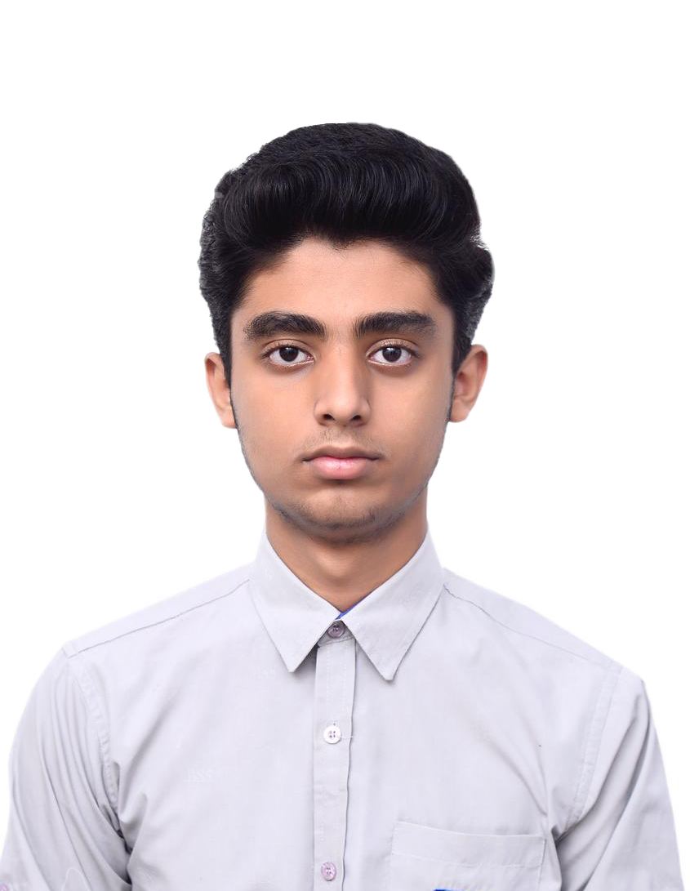
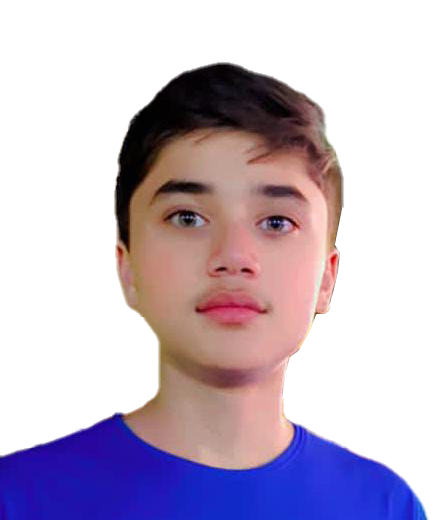
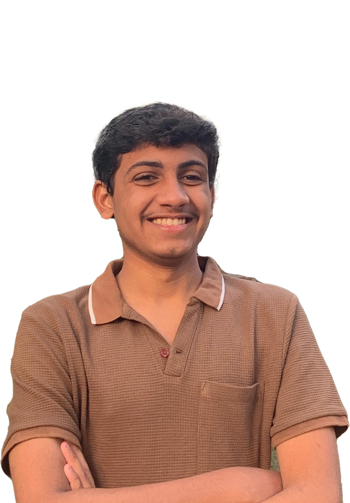
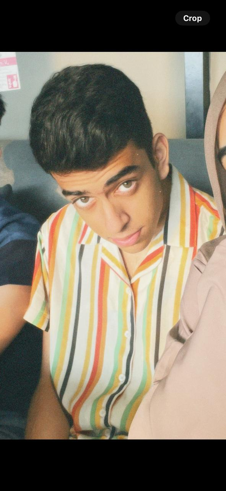

Meet the Team
Passionate innovators tackling digital illiteracy among senior citizens. Bringing the digital world to those who need it most.

Sarim Sajid
Team Leader
Visionary leader driving Digital Bridge's mission to empower seniors in the digital world.
Our Dedicated Team
Taha Talib
Research & Content Specialist
Leads crafting educational content tailored for seniors. Passionate about simplifying complex digital concepts into accessible learning materials.

Ammar Atique
Technical Lead & Developer
Masterminds the technical infrastructure and digital tools that power our senior-friendly platforms. Specializes in creating intuitive interfaces for non-tech-savvy users.

Atique Ahmed
Community Outreach Coordinator
Builds partnerships with senior communities and organizations worldwide. Designs hands-on workshops and training programs that bring digital literacy to real communities.

Zohair Mustafa
Social Media & Impact Strategist
Amplifies our mission through compelling social media campaigns and impact storytelling. Tracks program effectiveness and scales successful initiatives globally.